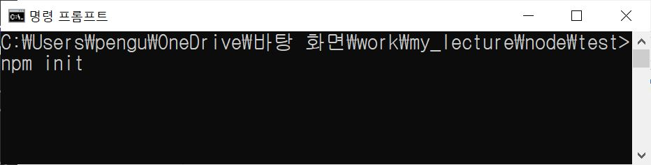
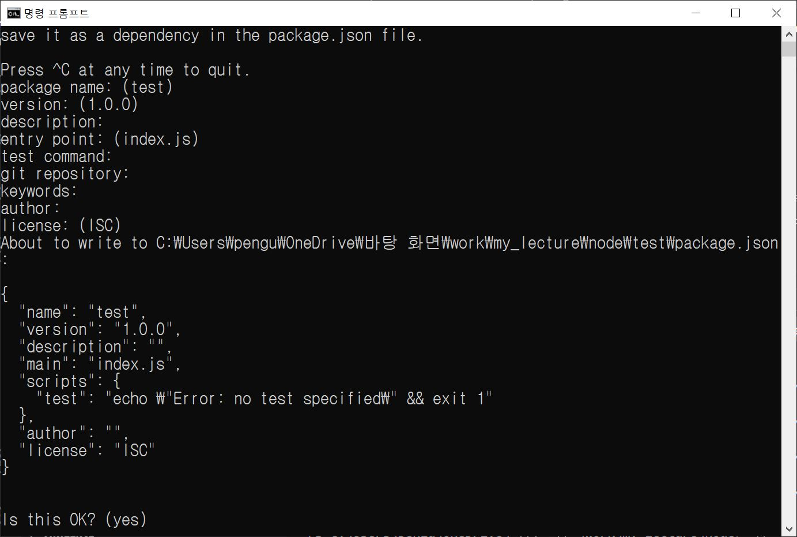
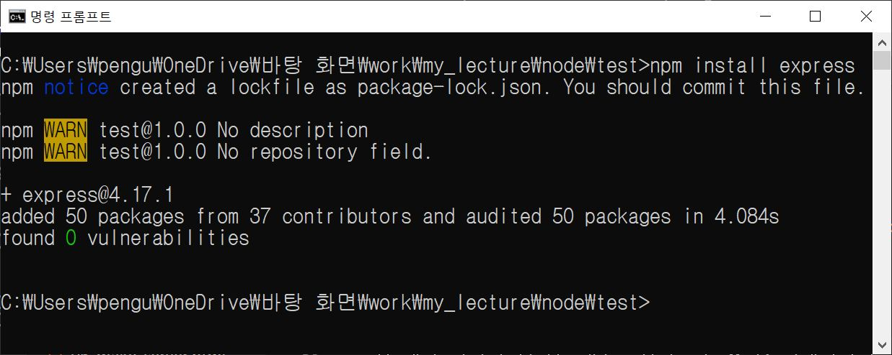

아주 간단한 서버를 만든다고 해도, 구현해야 할 기능이 무척 많다(쿠키 관리, 라우팅, 보안 등등).
그러나 세상에는 무수히 많은 선배 자바스크립트 프로그래머가 존재하고, 그들이 만들어놓은 뛰어난 기능의
라이브러리(패키지)도 무척 많이 있기에 우리는 그런 것들을 활용해 빠르고 쉽게 서버 개발을 진행할 수가 있다.
NPM은 거대한 커뮤니티를 보유하고 있는 패키지 매니저로, 이를 통해 누구나 어렵지 않게 자바스크립트 라이브러리를 다양하게 제공받을 수 있다.
NPM은 노드를 설치하면 함께 설치된다.
NPM 사용 명령어를 통해 패키지 관리 파일을 만들어 사용할 수가 있다. 프로젝트 폴더를 만들어 프로젝트를 진행할 때, package.json 이라는 이름의 파일을 만들고 시작하는 것이 좋다. 프로젝트 폴더를 package.json 을 포함한 폴더로 만드는 명령어는 아래와 같다.
명령어를 실행하게 되면, 프로젝트에 대한 여러가지 항목을 지정할 수 있는 입력창이 차례대로 나타나게 된다. 특별히 정해주고자 하는 사항이 없다면 계속 엔터를 눌러 값의 입력없이 진행하여도 큰 문제가 없다.
실행이 완료되면 프로젝트 폴더 안에는 package.json 파일이 생성된다.
1 2 3 4 5 6 7 8 9 10 11 12 | { "name": "test", "version": "1.0.0", "description": "", "main": "index.js", "scripts": { "test": "echo \"Error: no test specified\" && exit 1" }, "author": "", "license": "ISC" } |
패키지 관리 파일이 만들어졌으니, 패키지를 설치하여 사용하면 파일에 변화가 발생하는 것을 확인할 수 있다. 아래와 같은 명령어를 사용해 패키지를 설치해보자.
설치 이후의 package.json의 내용은 아래와 같다.
1 2 3 4 5 6 7 8 9 10 11 12 13 14 15 | { "name": "test", "version": "1.0.0", "description": "", "main": "index.js", "scripts": { "test": "echo \"Error: no test specified\" && exit 1" }, "author": "", "license": "ISC", "dependencies": { "express": "^4.17.1" } } |